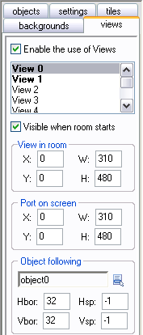
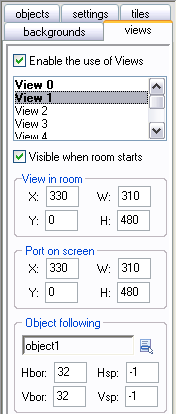

Download Example!
Download Example!
 Download Example!
Download Example!
Terug naar het tutorials overzicht.
Benodigdheden
- GM 5.3A/GM 6
- 2 sprites
- 1 background
Maak 2 objects
-Object1
-Object2
Zorg ervoor dat deze objects afzonderlijk bestuurbaar zijn!
Maak 1 room
-Multi Player room
Width: 640
Height: 480
Gebruik voor die room deze opties in de view tab:
 
Zet dan bij de backgrounds tab 'draw background color' aan en kies een leuk kleurtje (dit word de kleur van de 'split'lijn)
Zet vervolgens object Man1 in view 0, en Man2 in view1.
En dan heb je een splitscreen room! Als je andere maten wilt moet je ook de maten van de views veranderen.
Probeer maar wat uit en kijk wat er van komt.